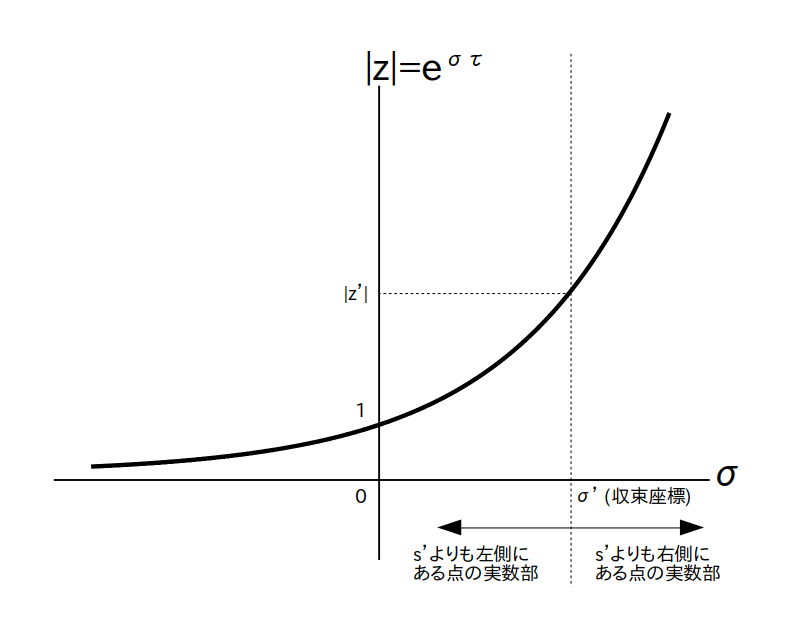

バッテンはラプラス変換の極の位置を表す

Z変換 $\textrm{F}(z)$ は全ての $z$ において収束するとは限らないので必ず収束領域を考える必要があります。
例4の様に$f[i]$ の式があらかじめ分かっていれば $\textrm{F}(z)$ の式を求める途中で収束領域が分かるのですが、$f[i]$ の式は分からないけど $\textrm{F}(z)$ の式は分かるという状況もよく有ります(例えば線形フィルタを設計する時など)。
この場合は $\textrm{F}(z)$ の式から収束領域を求める必要がありますが、前ページで説明したように Z 変換はラプラス変換と同一視出来ますので、Z 変換の収束領域もラプラス変換と同様に極の位置から求めることが出来ます。
さてラプラス変換では、S 平面の縦軸を $jw$、横軸を$\sigma$ とすると、極の中で一番右側にある極の右側(極は含まず)が収束領域になっていました(図1の黄色の部分)。
バッテンはラプラス変換の極の位置を表す
ところでラプラス変換の極に対応する Z 平面上の点もやはり Z 変換の極になります。
ここで S 平面上で一番右側にある極を図1の様に $s'= \sigma' + j \cdot w' $とし、それに対応する Z 平面上の点を $z'$ とすると、$z'$ の絶対値は
で表されますので、図2より
「 Z 変換の $z'$ 以外の極の絶対値は $|z'|$ より小さい」
「 S 平面上の収束領域は Z 平面上では半径 $|z'|$ の円の外側(円上の点は含まず)の領域になる」
ということが分かります。
サンプリング間隔 $\tau$ は 0 より大きい実数なので $\sigma$ が大きくなると $|z|$ も大きくなる
以下準備中